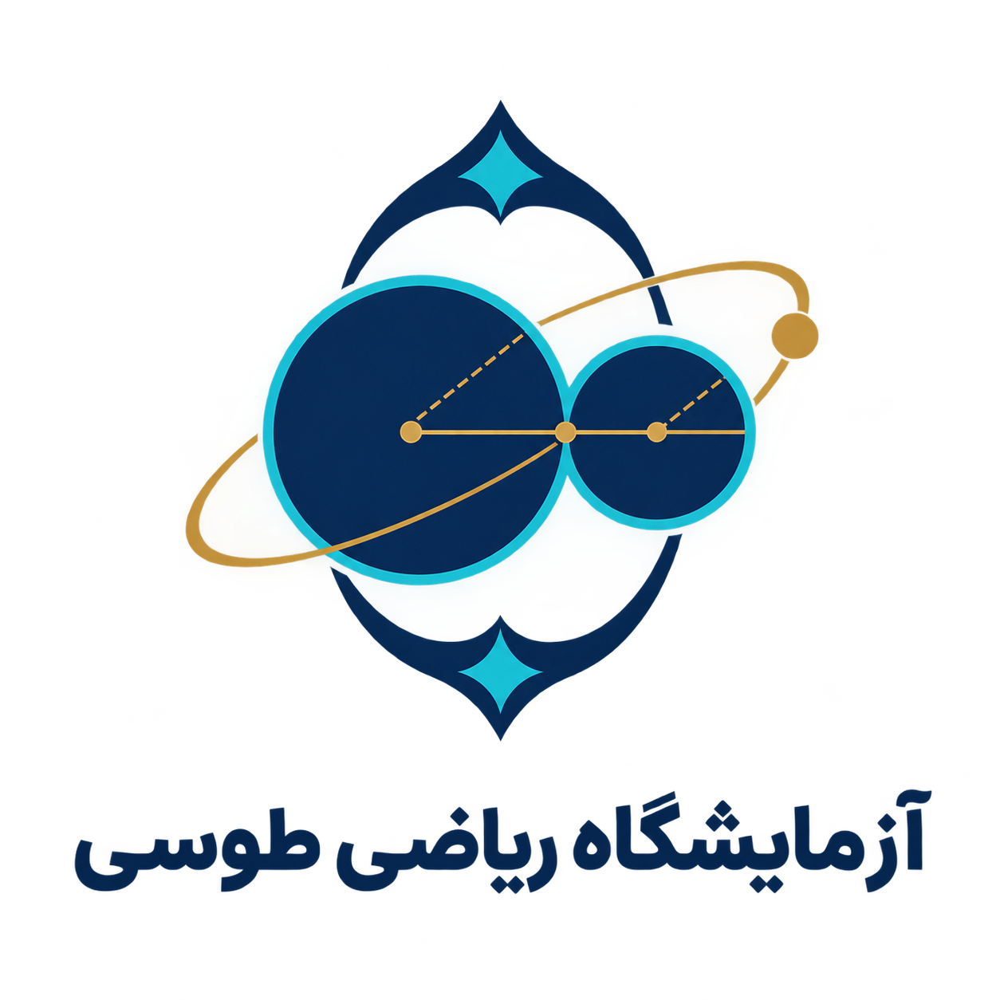
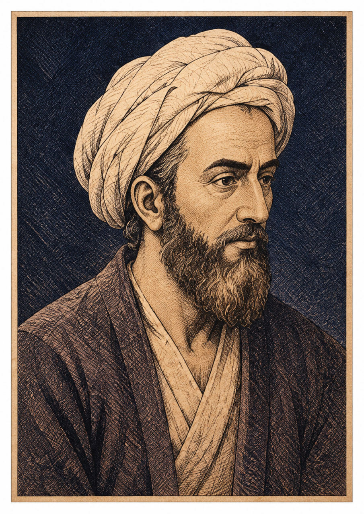
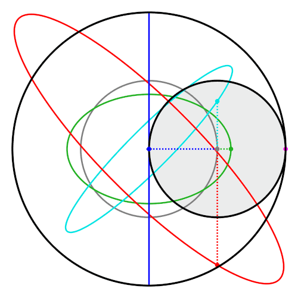
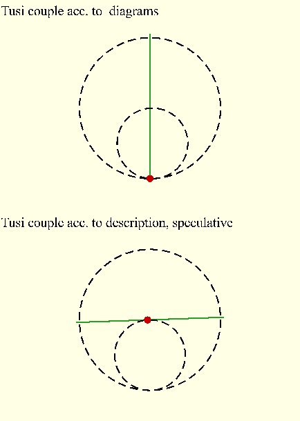
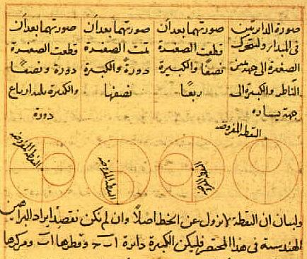

حرکت دایرهای
نقطهای روی دایرهای به شعاع r حرکت میکند. مختصات با سینوس و کسینوس توصیف میشود.
x = r cos(θ)
y = r sin(θ)
y = r sin(θ)

Tusi MathLab آزمایشگاه ریاضی خواجه نصیرالدین طوسیزوج طوسی نشان میدهد چگونه ترکیب دو حرکت دایرهای میتواند به حرکت رفتوبرگشتی روی یک خط تبدیل شود. اینجا فقط تماشا نمیکنی؛ آزمایش میکنی، پیشبینی میکنی و دلیل ریاضی را کشف میکنی.
چطور میتوان با ترکیب حرکتهای دایرهای، نقطهای را وادار کرد روی یک خط مستقیم حرکت کند؟
پارامترها را تغییر بده، حرکت را مشاهده کن و مسیر نقطه را بررسی کن.
دربارهٔ مدل: این شبیهساز یک نمایش آموزشی دوبعدی از زوج طوسی است. در حالت ایدهآل، با انتخاب شعاعها و جهتهای چرخش سازگار، مؤلفههای عمودی خنثی میشوند و نقطه روی یک قطر رفتوبرگشت میکند.
تنظیمات ذخیرهشده را دوباره اجرا کن.
هنوز آزمایشی ذخیره نکردهای.
دادهها از تابع ریاضی مدل تولید میشوند.
| زاویه | x محاسباتی | x نظری | y محاسباتی | اختلاف x |
|---|
محور افقی: زاویه؛ محور عمودی: مختصات.
برای هر زاویه، x=R cos(t) و y=0 محاسبه میشوند.
برای دیدن نتیجه، محاسبه را اجرا کن.
از مشاهدهٔ شکل تا توضیحی که برای داور ارائه کنی.
نقطهای روی دایرهای به شعاع r حرکت میکند. مختصات با سینوس و کسینوس توصیف میشود.
در زوج طوسی، دو حرکت دایرهای با نسبت شعاع و جهت چرخش مشخص ترکیب میشوند.
مؤلفههای عمودی دو بردار برابر و خلافجهتاند؛ جمع آنها صفر میشود.
هر مرحله را بخوان و ببین چرا نتیجه به دست میآید.
برای هر نقطه روی دایره، مختصات افقی و عمودی با کسینوس و سینوس زاویه مشخص میشود.
سفری تصویری به زندگی، آثار و اندیشهٔ خواجه نصیرالدین طوسی.

خواجه نصیرالدین طوسی یکی از تأثیرگذارترین دانشمندان جهان اسلام در قرن هفتم هجری است. او در ریاضیات، نجوم، فلسفه، کلام، منطق و اخلاق آثار ماندگاری از خود به یادگار گذاشت و رصدخانهٔ مراغه را به یکی از مهمترین مراکز علمی جهان تبدیل کرد.
دانش، چراغی است که هرگز خاموش نمیشود و هر که آن را بیفروزد، راه را برای دیگران روشن میکند.
— برگرفته از اندیشهٔ آموزشی طوسی (بازگویی، نه نقلقول مستند)⚠️ تصویر بالا بازسازی هنری معاصر است؛ از چهرهٔ تاریخی طوسی پرترهٔ مستند همعصر در دست نیست.

نسخهٔ خطیصفحهای از نسخهٔ ریاضی با ترسیمهای هندسی و برهان قضایا.

نجومجدولهایی برای محاسبهٔ موقعیت اجرام آسمانی.

متن و حاشیهصفحهای با متن اصلی و حاشیهنویسی عالمان بعدی.
هر کس در پی علم باشد، باید بداند که علم با پرسش آغاز میشود، نه با پاسخ.
— بازگویی آموزشی از روش علمی طوسیهندسه، زبان جهان است؛ و هر که آن را بداند، راز آفرینش را بهتر میفهمد.
— بازگویی آموزشی، نه نقلقول مستندستارگان را بشمار، تا بدانی که تو نیز بخشی از این نظم بزرگ هستی.
— بازگویی آموزشی، نه نقلقول مستنداول حدس بزن؛ بعد آزمایش کن و نتیجه را تحلیل کن.
پیش از آزمایش، پیشبینی خودت را انتخاب کن.
حدس خودت را بنویس.
فرضیه ثبت شد.
پاسخ هر سؤال را انتخاب کن و بازخورد بگیر.
نگاهی کوتاه به زمینهٔ تاریخی و اهمیت ایدهٔ زوج طوسی.
نصیرالدین طوسی (۱۲۰۱–۱۲۷۴ میلادی) از دانشمندان برجستهٔ ایرانی در ریاضیات، نجوم، فلسفه و علوم دیگر بود. او در شکلگیری و فعالیت رصدخانهٔ مراغه نقشی مهم داشت.
زوج طوسی نامی است که در تاریخ ریاضیات برای سازوکاری هندسی به کار میرود: ترکیب دو حرکت دایرهای با نسبتهای مشخص، حرکت رفتوبرگشتی روی یک خط را پدید میآورد.
آغاز زندگی دانشمندی اثرگذار.
مراغه به مرکز پژوهش نجومی تبدیل شد.
آثار او در سنتهای علمی بعدی بررسی شدند.
مدل هندسی رابطهٔ حرکت و ریاضیات را نشان میدهد.
دادههای آزمایش را مرتب کن و گزارش بساز.
هدف، فرضیه، روش و نتیجه را تکمیل کن.
مسیر کوتاه برای معرفی پروژه به داور.
کپی شد.
سازوکار هندسی که با ترکیب دو حرکت دایرهای، حرکت خطی میسازد.
پارهخطی از مرکز دایره تا نقطهای روی محیط.
مقداری که در مدل تغییر میدهیم.
پیشبینی قابلآزمایش پیش از آزمایش.
نمایش سادهشدهٔ یک پدیده با رابطهها.
جدول نجومی برای محاسبهٔ موقعیت اجرام.
ادعاها باید قابل بررسی باشند.
اطلاعات عمومی دربارهٔ طوسی.
مطالعه ↗تاریخ ریاضیات و ریاضیدانان.
پایگاه ↗نسخههای تاریخی مرتبط با طوسی.
مشاهده ↗شبیهساز یک مدل آموزشی ایدهآل است.
اثبات ریاضی ↑این سایت یک پروژهٔ آموزشی است، نه مقالهٔ تخصصی. پیش از ارائه، منابع را بررسی کن.